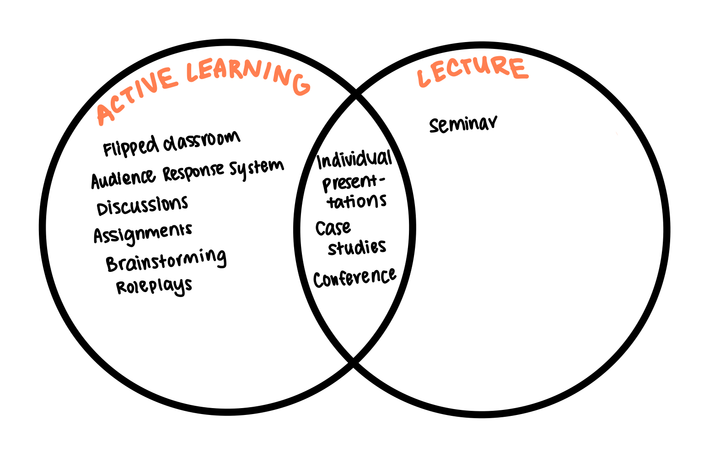
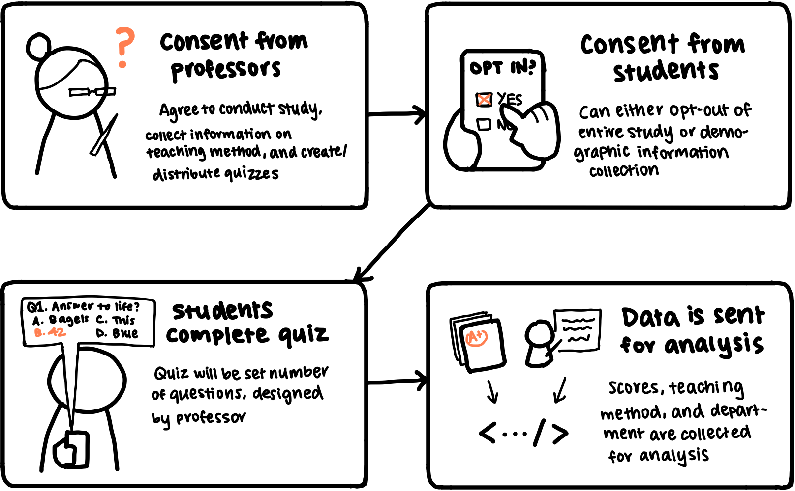

To even begin thinking about how we should measure teaching styles, we first need to define the categorizations of
teaching styles. To capture these different styles, I will be using the categorizations from
Sivarajah, 2018 and Sajjad, 2010.
Sivarajah looks at more modern styles of teaching, which include:
Audience Response Systems (ARS)
These are most often known as "clickers" or "iClickers". During lectures, responses entered onto clickers
are anonymous, encouraging participation without the need to speak up. Additionally, some professors may
choose to use clickers as a metric to measure participation and make it mandatory by associating
clicker IDs with student IDs. Some ARSs have the ability for students to send in questions during the
lecture, reducing the pressure of needing to speak out loud.
Remote teaching
Remote lectures exploded in 2020 out of necessitiy during the COVID pandemic. Students were able to
attend lectures from the comfort of their own homes, and these lectures were typically hosted on
video conferencing platforms like Zoom. Remote teaching may incorporate ARSs, as well as alleviate
the tedium of commute, especially for those who live off campus. Additionally, unlike an in-person
lecture in a spacey lecture hall, Zoom allows for students to interact with whoever they would
like through the chat feature. It also gives students the option to voice their opinions through
text rather than through voice.
Active Learning
This can be described as a broad category of teaching styles–any teaching style that involves the
student participating other than "watching, listening, and taking notes" as described by
Cornell University.
In other words, active learning requires the student to engage with the information in a deeper sense,
whether it be applying it through problem solving, making new deductions, or connecting their own
experiences. This is more effective than just simple note-taking, since it requires the student to
interact with the newly acquired knowledge in more than one way.
Flipped classrooms
Flipped classrooms are essentially a full incorporation of active learning into the classroom. Rather
than having the student learn during lecture and complete assignments outside of lecture, students
are instead asked to review material before class, which they will then apply during class through
case-based scenarios, problem solving, and discussions.
Sajjad, on the other hand, attempts to generally categorize all forms of teaching, which include:
Lectures
Group discussions
Individual presentations
Assignments
Seminars
Workshops
Conferences
Brainstorming
Role plays
Case studies
Most of these seem to have a common theme of active learning vs. lecture-style, with the exception
of remote learning, which is medium-dependent. Most, if not all, of these styles can be incorporated both in-person
and online; however, limitations may apply depending on the medium. That being said, I categorized the styles into
active and lecture, as shown below:

To record the efficiency of these various teaching styles, I’ll
be collecting data from classes in various departments throughout the period of a quarter. First, I’ll collect consent
from the professors to observe their teaching styles and conduct the study in their classes. Next, I will periodically
distribute quizzes after the end of lectures to assess information retention from students. These quizzes will be
designed by professors themselves and are directly based off information taught in lecture, as well as completable
within 5 minutes. Additionally, they will have a set number of points so that I can compare scores across different
lectures.

Data will be collected in the following form (as JSON, for clarity). Note that each data value
represents one class session.
If you’re worried about your privacy, then no worries! During the quizzes, you will be able to opt-out in two places.
Firstly, you can opt-out from doing the quiz altogether–this will in no way affect your grade. Secondly, if you decide
to do the quiz but wish to remain anonymous/forego demographic information collection, then you may opt-out from that as
well. Additionally, I will not collect any identifying information, such as name, PID, or email through the study.
Your responses will be anonymized as much as possible. To achieve this, I will have the professor send me the information
using the data value format as listed above. This way, privacy relations are maintained–professors will still be able to
associate your score with your name, as to ensure data integrity, but I will only receive the data necessary to the study.
Response bias is a real issue, and may result in high achieving students being unfairly represented in our sample pool.
To incentivize more students to respond to the quiz, professors can integrate one or more questions asked on the quiz into an
actual quiz or exam that will count for their grades. Quiz questions will still be available to all students to view, but this
encourages students to try the quiz for themselves to gauge how well they would do on an exam. Extra credit is NOT
recommended as incentives to fill out these surveys; otherwise, that would weaken the consent that is provided to us.